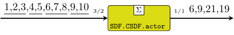

| Copyright | (c) George Ungureanu KTH/EECS/ESY 2018-2020 |
|---|---|
| License | BSD-style (see the file LICENSE) |
| Maintainer | ugeorge@kth.se |
| Stability | experimental |
| Portability | portable |
| Safe Haskell | Safe |
| Language | Haskell2010 |
ForSyDe.Atom.MoC.SDF.CSDF
Contents
Description
The CSDF library implements a DSL of atoms operating according to the
cyclo-static dataflow model of computation, in terms of the atoms of
ForSyDe.Atom.MoC.SDF. As such SADF patterns are operating on
SDF signals, i.e. they have the exact same time semantics,
hence there is no need for MoC interfaces between these two MoCs.
CSDF is another attempt to increase SDF's expresivity in a controlled manner by allowing dynamic firing rates in a static sequence which repeat cyclically. To implement this library we reused everything: the CSDF actors are implemented as specific ForSyDe.Atom.MoC.SDF.SADF patterns, and everything else is re-exported from ForSyDe.Atom.MoC.SDF.
Useful pointers:
- ForSyDe.Atom contains general guidelines for using the API
- ForSyDe.Atom.MoC.SDF defines the synchronous dataflow MoC.
- ForSyDe.Atom.MoC.SDF.SADF defines the scenario-aware dataflow MoC.
- the naming convention rules on how to interpret the function names based on their number of inputs and outputs.
Re-Exported from SDF
These constructors and utilities are re-exported from ForSyDe.Atom.MoC.SDF for convenience.
signal :: [a] -> Signal a Source #
Transforms a list of values into a SDF signal with only one partition, i.e. all events share the same (initial) tag.
The delay process "delays" a signal with initial events built
from a list. It is an instantiation of the delay
constructor.
>>>let s = signal [1,2,3,4,5]>>>delay [0,0,0] s{0,0,0,1,2,3,4,5}

CSDF actors
Arguments
| :: [((Cons, Cons), (Prod, Prod), [a1] -> [a2] -> ([b1], [b2]))] | control signal |
| -> Signal a1 | data signal |
| -> Signal a2 | data signal |
| -> (Signal b1, Signal b2) | output data signals |
A CSDF actor is very similar to a SDF actor, but instead of only one set of execution parameter (production rate, consumption rate, function), it takes a finite list of such parameters, and cycles through them with each firing.
Constructors: actor[1-4][1-4].
>>>let s1 = signal [1..10]>>>let f a = [sum a]>>>actor11 [(3,1,f),(2,1,f)] s1{6,9,21,19}
